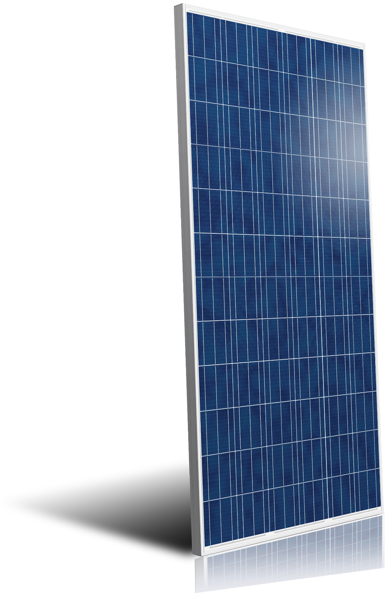
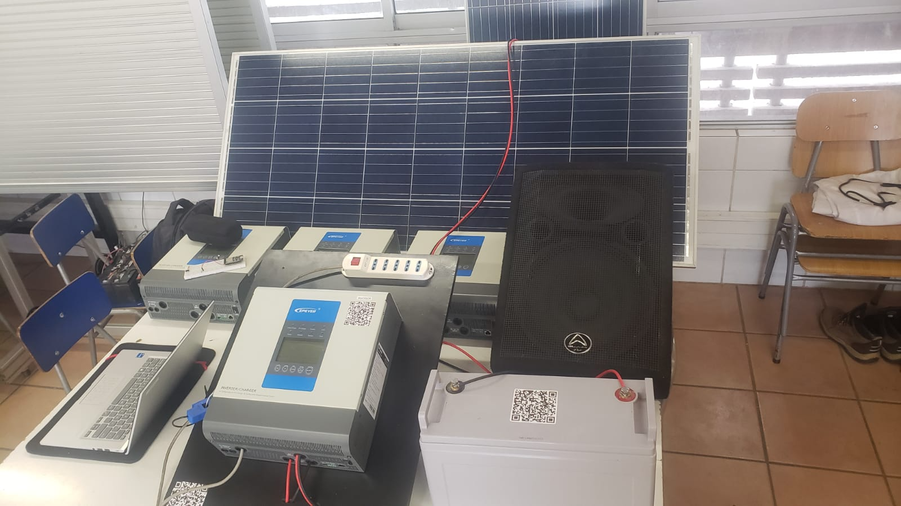
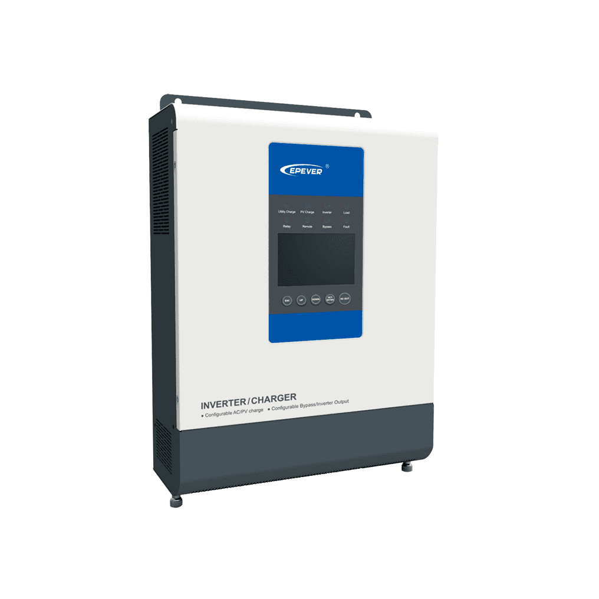
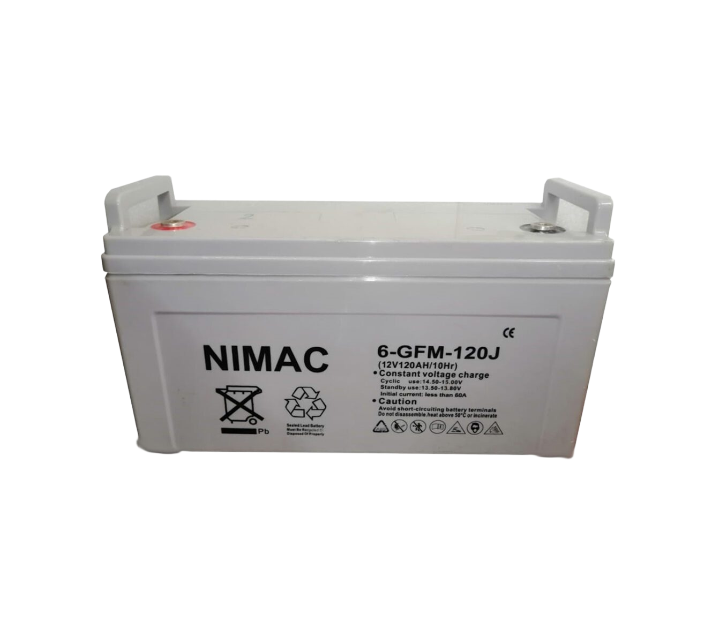
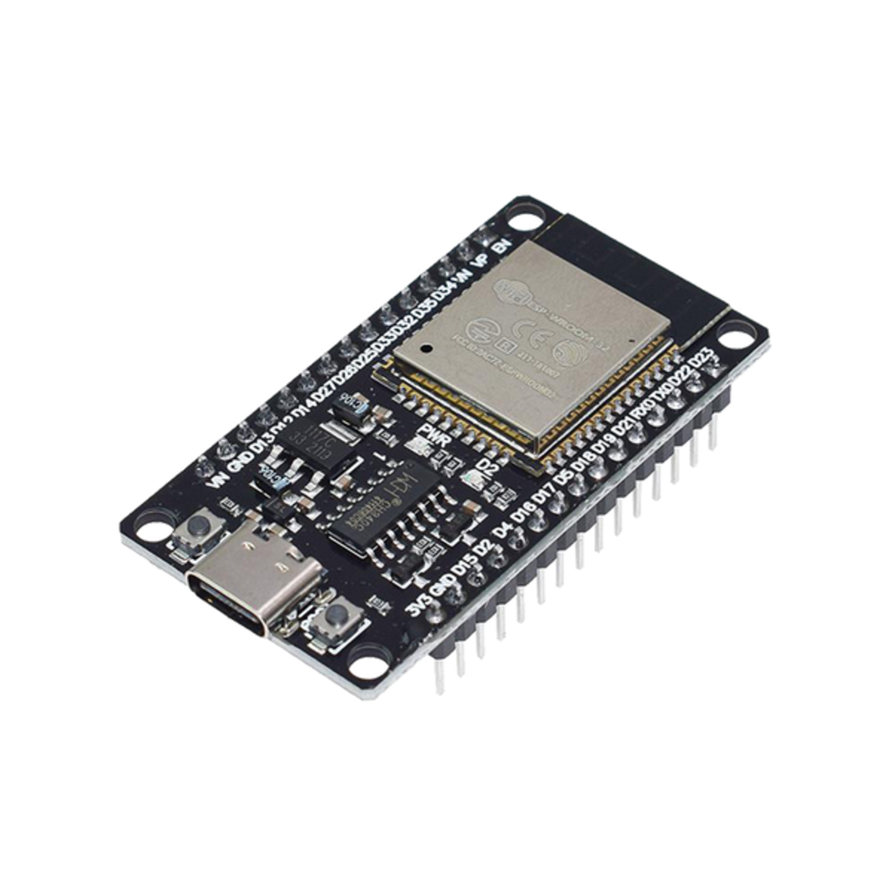
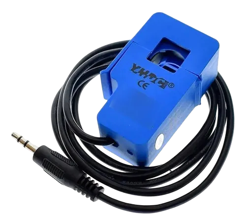
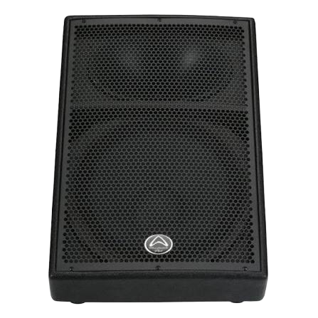

1. Panel Solar
Capta la radiación solar en el lugar de la emergencia y la transforma en energía eléctrica limpia de manera continua, actuando como la fuente de alimentación primaria del sistema.
Nace para erradicar la incomunicación crítica tras catástrofes sísmicas, marítimas o incendios. Mediante un sistema alimentado por energía solar, opera de forma 100% independiente de la red eléctrica convencional para garantizar asistencia inmediata cuando el suministro colapsa.


Capta la radiación solar en el lugar de la emergencia y la transforma en energía eléctrica limpia de manera continua, actuando como la fuente de alimentación primaria del sistema.

Recibe la corriente generada por el panel solar, la regula de forma segura para evitar sobrecargas y la gestiona para alimentar los equipos y cargar el banco de baterías.

Almacena el exceso de energía eléctrica para mantener el sistema 100% operativo durante la noche, en días nublados o ante la falla total de la red pública.


Integrada por el microcontrolador ESP32 y el sensor de corriente. Mide en tiempo real el consumo del sistema, procesa los datos y los transmite a una interfaz web local accesible mediante la conexión Wi-Fi asignada al ESP32.

Convierte las señales procesadas en audio masivo de alta potencia, difundiendo alertas, instrucciones de rescate e información vital a la población afectada.